宽POLY身份保持，AA对应暂未建立
宽POLY身份已确认，但当前AA/POLY的点位对应尚未验证。 必须先核对独立结构标记和实际对应位置，不能据当前选取的AA视窗推断没有AA或判为场区POLY。
POLY原图上下文
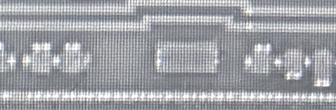
AA原图上下文（未投影）

来源306条；已建立AA对应候选305条；未解决1条。几何检查：{'PASS': 305, 'CONFLICT': 0, 'BLOCKED': 0}。另有2个未完整观察槽位，不补画POLY。
原AA工作几何检查：{'PASS': 300, 'CONFLICT': 5, 'BLOCKED': 0}；另存10条AA整排对齐提议。AA原始来源不变，U05显示范围已通过人工复核，详见页首记录。
所有来源、原AA与已审联合版图均保留。除页首明确批准的U05显示范围，其余新关系及设计图未人审； 红色冲突不得自动撤销材料身份或移动AA掩盖。 相对像素预算不是真实PDK规则。
完整对应与冲突记录 · 对应依据与参数 · 分离的联合候选模型
宽POLY身份已确认，但当前AA/POLY的点位对应尚未验证。 必须先核对独立结构标记和实际对应位置，不能据当前选取的AA视窗推断没有AA或判为场区POLY。

照片各保留原始坐标；两图标签表示结构关联，不表示已像素配准。联合图另用AA设计坐标。蓝色=结构检查通过的候选，红色=约束冲突；结构PASS不等于人工确认或真实工艺DRC。
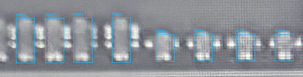
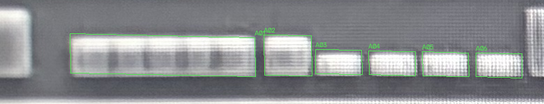

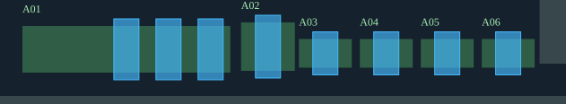
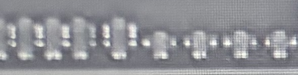
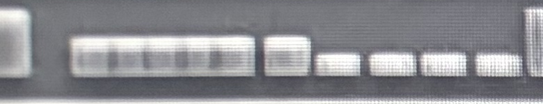
| A编号 / AA对象 | POLY来源编号 | 观察/槽位 | 几何检查 |
|---|---|---|---|
| A01 / AA-F01744 | P001 (SG-U01-001), P002 (SG-U01-002), P003 (SG-U01-003) | 3/5；未观察槽位[0, 1] | SG-U01-001: PASS, SG-U01-002: PASS, SG-U01-003: PASS |
| A02 / AA-F01745 | P004 (SG-U01-004) | 1/1；未观察槽位[] | SG-U01-004: PASS |
| A03 / AA-F01734 | P005 (SG-U01-005) | 1/1；未观察槽位[] | SG-U01-005: PASS |
| A04 / AA-F01735 | P006 (SG-U01-006) | 1/1；未观察槽位[] | SG-U01-006: PASS |
| A05 / AA-F01736 | P007 (SG-U01-007) | 1/1；未观察槽位[] | SG-U01-007: PASS |
| A06 / AA-F01737 | P008 (SG-U01-008) | 1/1；未观察槽位[] | SG-U01-008: PASS |
照片各保留原始坐标；两图标签表示结构关联，不表示已像素配准。联合图另用AA设计坐标。蓝色=结构检查通过的候选，红色=约束冲突；结构PASS不等于人工确认或真实工艺DRC。
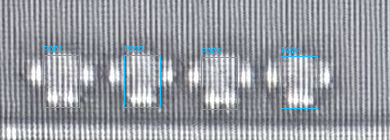
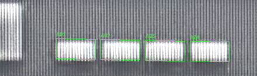
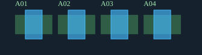

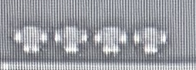
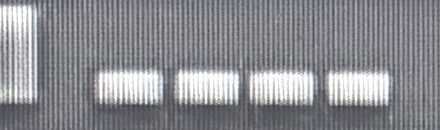
| A编号 / AA对象 | POLY来源编号 | 观察/槽位 | 几何检查 |
|---|---|---|---|
| A01 / AA-F01740 | P001 (SG-U02-001) | 1/1；未观察槽位[] | SG-U02-001: PASS |
| A02 / AA-F01741 | P002 (SG-U02-002) | 1/1；未观察槽位[] | SG-U02-002: PASS |
| A03 / AA-F01742 | P003 (SG-U02-003) | 1/1；未观察槽位[] | SG-U02-003: PASS |
| A04 / AA-F01743 | P004 (SG-U02-004) | 1/1；未观察槽位[] | SG-U02-004: PASS |
照片各保留原始坐标；两图标签表示结构关联，不表示已像素配准。联合图另用AA设计坐标。蓝色=结构检查通过的候选，红色=约束冲突；结构PASS不等于人工确认或真实工艺DRC。
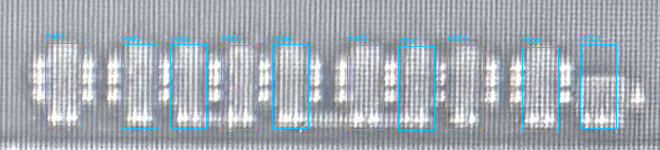
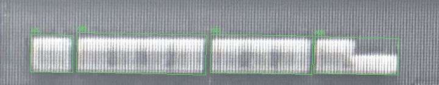
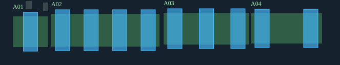

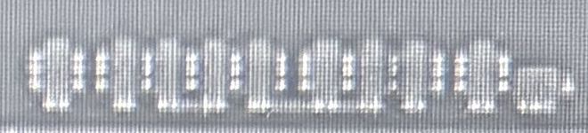
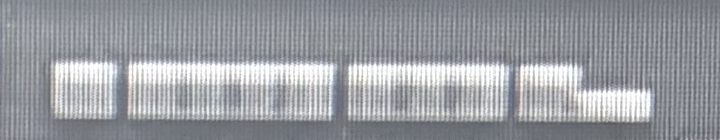
| A编号 / AA对象 | POLY来源编号 | 观察/槽位 | 几何检查 |
|---|---|---|---|
| A01 / AA-F01750 | P001 (SG-U03-001) | 1/1；未观察槽位[] | SG-U03-001: PASS |
| A02 / AA-F01751 | P002 (SG-U03-002), P003 (SG-U03-003), P004 (SG-U03-004), P005 (SG-U03-005) | 4/4；未观察槽位[] | SG-U03-002: PASS, SG-U03-003: PASS, SG-U03-004: PASS, SG-U03-005: PASS |
| A03 / AA-F01753 | P006 (SG-U03-006), P007 (SG-U03-007), P008 (SG-U03-008) | 3/3；未观察槽位[] | SG-U03-006: PASS, SG-U03-007: PASS, SG-U03-008: PASS |
| A04 / AA-F01752 | P009 (SG-U03-009), P010 (SG-U03-010) | 2/2；未观察槽位[] | SG-U03-009: PASS, SG-U03-010: PASS |
照片各保留原始坐标；两图标签表示结构关联，不表示已像素配准。联合图另用AA设计坐标。蓝色=结构检查通过的候选，红色=约束冲突；结构PASS不等于人工确认或真实工艺DRC。
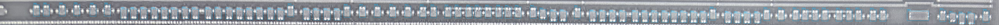
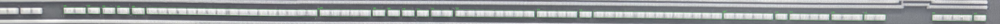
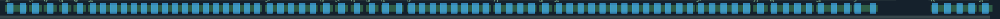

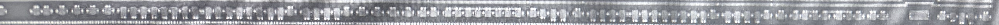
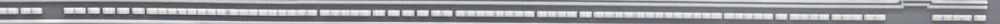
| A编号 / AA对象 | POLY来源编号 | 观察/槽位 | 几何检查 |
|---|---|---|---|
| A01 / AA-F01709 | P001 (SG-U04-001), P002 (SG-U04-002) | 2/2；未观察槽位[] | SG-U04-001: PASS, SG-U04-002: PASS |
| A02 / AA-F01710 | P003 (SG-U04-003) | 1/1；未观察槽位[] | SG-U04-003: PASS |
| A03 / AA-F01712 | P004 (SG-U04-004) | 1/1；未观察槽位[] | SG-U04-004: PASS |
| A04 / AA-F01711 | P005 (SG-U04-005) | 1/1；未观察槽位[] | SG-U04-005: PASS |
| A05 / AA-F01713 | P006 (SG-U04-006) | 1/1；未观察槽位[] | SG-U04-006: PASS |
| A06 / AA-F01714 | P007 (SG-U04-007), P008 (SG-U04-008), P009 (SG-U04-009), P010 (SG-U04-010), P011 (SG-U04-011), P012 (SG-U04-012), P013 (SG-U04-013), P014 (SG-U04-014), P015 (SG-U04-015), P016 (SG-U04-016), P017 (SG-U04-017), P018 (SG-U04-018), P019 (SG-U04-019), P020 (SG-U04-020), P021 (SG-U04-021), P022 (SG-U04-022), P023 (SG-U04-023) | 17/17；未观察槽位[] | SG-U04-007: PASS, SG-U04-008: PASS, SG-U04-009: PASS, SG-U04-010: PASS, SG-U04-011: PASS, SG-U04-012: PASS, SG-U04-013: PASS, SG-U04-014: PASS, SG-U04-015: PASS, SG-U04-016: PASS, SG-U04-017: PASS, SG-U04-018: PASS, SG-U04-019: PASS, SG-U04-020: PASS, SG-U04-021: PASS, SG-U04-022: PASS, SG-U04-023: PASS |
| A07 / AA-F01715 | P024 (SG-U04-024), P025 (SG-U04-025), P026 (SG-U04-026), P027 (SG-U04-027), P028 (SG-U04-028) | 5/5；未观察槽位[] | SG-U04-024: PASS, SG-U04-025: PASS, SG-U04-026: PASS, SG-U04-027: PASS, SG-U04-028: PASS |
| A08 / AA-F01717 | P029 (SG-U04-029) | 1/1；未观察槽位[] | SG-U04-029: PASS |
| A09 / AA-F01716 | P030 (SG-U04-030) | 1/1；未观察槽位[] | SG-U04-030: PASS |
| A10 / AA-F01718 | P031 (SG-U04-031) | 1/1；未观察槽位[] | SG-U04-031: PASS |
| A11 / AA-F01719 | P032 (SG-U04-032) | 1/1；未观察槽位[] | SG-U04-032: PASS |
| A12 / AA-F01720 | P033 (SG-U04-033), P034 (SG-U04-034) | 2/2；未观察槽位[] | SG-U04-033: PASS, SG-U04-034: PASS |
| A13 / AA-F01721 | P035 (SG-U04-035), P036 (SG-U04-036), P037 (SG-U04-037), P038 (SG-U04-038), P039 (SG-U04-039), P040 (SG-U04-040), P041 (SG-U04-041), P042 (SG-U04-042) | 8/8；未观察槽位[] | SG-U04-035: PASS, SG-U04-036: PASS, SG-U04-037: PASS, SG-U04-038: PASS, SG-U04-039: PASS, SG-U04-040: PASS, SG-U04-041: PASS, SG-U04-042: PASS |
| A14 / AA-F01722 | P043 (SG-U04-043), P044 (SG-U04-044), P045 (SG-U04-045), P046 (SG-U04-046) | 4/4；未观察槽位[] | SG-U04-043: PASS, SG-U04-044: PASS, SG-U04-045: PASS, SG-U04-046: PASS |
| A15 / AA-F01723 | P047 (SG-U04-047) | 1/1；未观察槽位[] | SG-U04-047: PASS |
| A16 / AA-F01724 | P048 (SG-U04-048), P049 (SG-U04-049), P050 (SG-U04-050), P051 (SG-U04-051), P052 (SG-U04-052), P053 (SG-U04-053), P054 (SG-U04-054), P055 (SG-U04-055), P056 (SG-U04-056), P057 (SG-U04-057), P058 (SG-U04-058), P059 (SG-U04-059), P060 (SG-U04-060) | 13/13；未观察槽位[] | SG-U04-048: PASS, SG-U04-049: PASS, SG-U04-050: PASS, SG-U04-051: PASS, SG-U04-052: PASS, SG-U04-053: PASS, SG-U04-054: PASS, SG-U04-055: PASS, SG-U04-056: PASS, SG-U04-057: PASS, SG-U04-058: PASS, SG-U04-059: PASS, SG-U04-060: PASS |
| A17 / AA-F01726 | P061 (SG-U04-061), P062 (SG-U04-062), P063 (SG-U04-063), P064 (SG-U04-064), P065 (SG-U04-065) | 5/5；未观察槽位[] | SG-U04-061: PASS, SG-U04-062: PASS, SG-U04-063: PASS, SG-U04-064: PASS, SG-U04-065: PASS |
| A18 / AA-F01725 | P066 (SG-U04-066) | 1/1；未观察槽位[] | SG-U04-066: PASS |
| A19 / AA-F01727 | P067 (SG-U04-067), P068 (SG-U04-068), P069 (SG-U04-069), P070 (SG-U04-070) | 4/4；未观察槽位[] | SG-U04-067: PASS, SG-U04-068: PASS, SG-U04-069: PASS, SG-U04-070: PASS |
| A20 / AA-F01728 | P071 (SG-U04-071), P072 (SG-U04-072), P073 (SG-U04-073) | 3/3；未观察槽位[] | SG-U04-071: PASS, SG-U04-072: PASS, SG-U04-073: PASS |
| A21 / AA-F01729 | P074 (SG-U04-074), P075 (SG-U04-075) | 2/2；未观察槽位[] | SG-U04-074: PASS, SG-U04-075: PASS |
| A22 / AA-F01730 | P076 (SG-U04-076), P077 (SG-U04-077), P078 (SG-U04-078), P079 (SG-U04-079) | 4/4；未观察槽位[] | SG-U04-076: PASS, SG-U04-077: PASS, SG-U04-078: PASS, SG-U04-079: PASS |
| A23 / AA-F01731 | P080 (SG-U04-080) | 1/1；未观察槽位[] | SG-U04-080: PASS |
照片各保留原始坐标；两图标签表示结构关联，不表示已像素配准。联合图另用AA设计坐标。蓝色=结构检查通过的候选，红色=约束冲突；结构PASS不等于人工确认或真实工艺DRC。
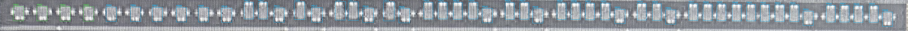
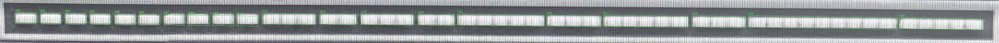
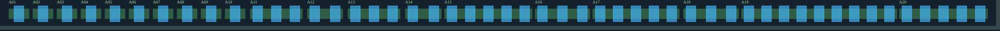
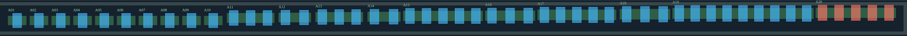
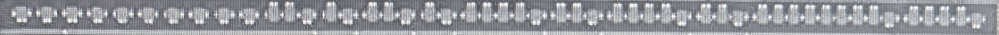
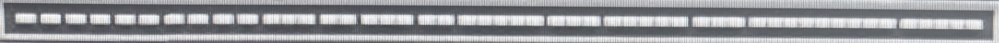
| A编号 / AA对象 | POLY来源编号 | 观察/槽位 | 几何检查 |
|---|---|---|---|
| A01 / AA-F01687 | P001 (G54-P01) | 1/1；未观察槽位[] | G54-P01: PASS |
| A02 / AA-F01691 | P002 (G54-P02) | 1/1；未观察槽位[] | G54-P02: PASS |
| A03 / AA-F01690 | P003 (G54-P03) | 1/1；未观察槽位[] | G54-P03: PASS |
| A04 / AA-F01689 | P004 (G54-P04) | 1/1；未观察槽位[] | G54-P04: PASS |
| A05 / AA-F01688 | P005 (SG-U05-005) | 1/1；未观察槽位[] | SG-U05-005: PASS |
| A06 / AA-F01692 | P006 (SG-U05-006) | 1/1；未观察槽位[] | SG-U05-006: PASS |
| A07 / AA-F01693 | P007 (SG-U05-007) | 1/1；未观察槽位[] | SG-U05-007: PASS |
| A08 / AA-F01694 | P008 (SG-U05-008) | 1/1；未观察槽位[] | SG-U05-008: PASS |
| A09 / AA-F01695 | P009 (SG-U05-009) | 1/1；未观察槽位[] | SG-U05-009: PASS |
| A10 / AA-F01696 | P010 (SG-U05-010) | 1/1；未观察槽位[] | SG-U05-010: PASS |
| A11 / AA-F01697 | P011 (SG-U05-011), P012 (SG-U05-012), P013 (SG-U05-013) | 3/3；未观察槽位[] | SG-U05-011: PASS, SG-U05-012: PASS, SG-U05-013: PASS |
| A12 / AA-F01698 | P014 (S03-01), P015 (S03-02) | 2/2；未观察槽位[] | S03-01: PASS, S03-02: PASS |
| A13 / AA-F01699 | P016 (S03-03), P017 (S03-04), P018 (S03-05) | 3/3；未观察槽位[] | S03-03: PASS, S03-04: PASS, S03-05: PASS |
| A14 / AA-F01700 | P019 (S03-06), P020 (S03-07) | 2/2；未观察槽位[] | S03-06: PASS, S03-07: PASS |
| A15 / AA-F01701 | P021 (SG-U05-021), P022 (SG-U05-022), P023 (SG-U05-023), P024 (SG-U05-024), P025 (SG-U05-025) | 5/5；未观察槽位[] | SG-U05-021: PASS, SG-U05-022: PASS, SG-U05-023: PASS, SG-U05-024: PASS, SG-U05-025: PASS |
| A16 / AA-F01702 | P026 (SG-U05-026), P027 (SG-U05-027), P028 (SG-U05-028) | 3/3；未观察槽位[] | SG-U05-026: PASS, SG-U05-027: PASS, SG-U05-028: PASS |
| A17 / AA-F01703 | P029 (SG-U05-029), P030 (SG-U05-030), P031 (SG-U05-031), P032 (SG-U05-032), P033 (SG-U05-033) | 5/5；未观察槽位[] | SG-U05-029: PASS, SG-U05-030: PASS, SG-U05-031: PASS, SG-U05-032: PASS, SG-U05-033: PASS |
| A18 / AA-F01704 | P034 (SG-U05-034), P035 (SG-U05-035), P036 (SG-U05-036) | 3/3；未观察槽位[] | SG-U05-034: PASS, SG-U05-035: PASS, SG-U05-036: PASS |
| A19 / AA-F01705 | P037 (SG-U05-037), P038 (SG-U05-038), P039 (SG-U05-039), P040 (SG-U05-040), P041 (SG-U05-041), P042 (SG-U05-042), P043 (SG-U05-043), P044 (SG-U05-044), P045 (SG-U05-045) | 9/9；未观察槽位[] | SG-U05-037: PASS, SG-U05-038: PASS, SG-U05-039: PASS, SG-U05-040: PASS, SG-U05-041: PASS, SG-U05-042: PASS, SG-U05-043: PASS, SG-U05-044: PASS, SG-U05-045: PASS |
| A20 / AA-F01706 | P046 (SG-U05-046), P047 (SG-U05-047), P048 (SG-U05-048), P049 (SG-U05-049), P050 (SG-U05-050) | 5/5；未观察槽位[] | SG-U05-046: PASS, SG-U05-047: PASS, SG-U05-048: PASS, SG-U05-049: PASS, SG-U05-050: PASS |
照片各保留原始坐标；两图标签表示结构关联，不表示已像素配准。联合图另用AA设计坐标。蓝色=结构检查通过的候选，红色=约束冲突；结构PASS不等于人工确认或真实工艺DRC。
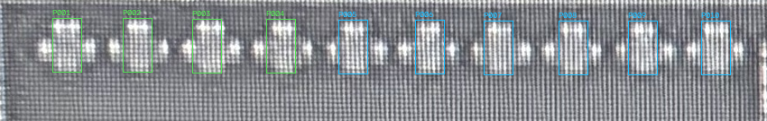
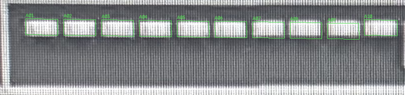
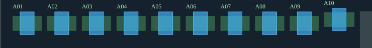

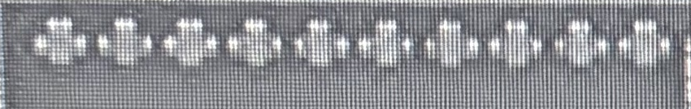
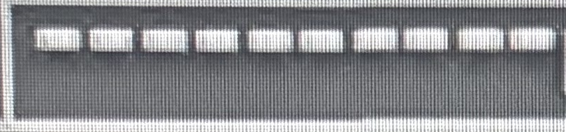
| A编号 / AA对象 | POLY来源编号 | 观察/槽位 | 几何检查 |
|---|---|---|---|
| A01 / AA-F01662 | P001 (G55-P01) | 1/1；未观察槽位[] | G55-P01: PASS |
| A02 / AA-F01661 | P002 (G55-P02) | 1/1；未观察槽位[] | G55-P02: PASS |
| A03 / AA-F01660 | P003 (G55-P03) | 1/1；未观察槽位[] | G55-P03: PASS |
| A04 / AA-F01663 | P004 (G55-P04) | 1/1；未观察槽位[] | G55-P04: PASS |
| A05 / AA-F01664 | P005 (SG-U06-005) | 1/1；未观察槽位[] | SG-U06-005: PASS |
| A06 / AA-F01665 | P006 (SG-U06-006) | 1/1；未观察槽位[] | SG-U06-006: PASS |
| A07 / AA-F01666 | P007 (SG-U06-007) | 1/1；未观察槽位[] | SG-U06-007: PASS |
| A08 / AA-F01667 | P008 (SG-U06-008) | 1/1；未观察槽位[] | SG-U06-008: PASS |
| A09 / AA-F01668 | P009 (SG-U06-009) | 1/1；未观察槽位[] | SG-U06-009: PASS |
| A10 / AA-F01669 | P010 (SG-U06-010) | 1/1；未观察槽位[] | SG-U06-010: PASS |
照片各保留原始坐标；两图标签表示结构关联，不表示已像素配准。联合图另用AA设计坐标。蓝色=结构检查通过的候选，红色=约束冲突；结构PASS不等于人工确认或真实工艺DRC。
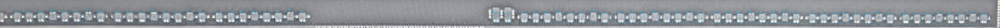
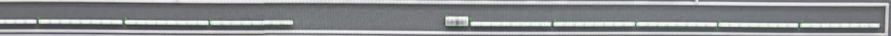
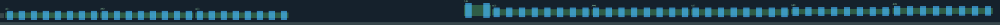

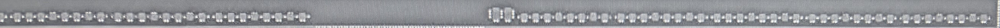
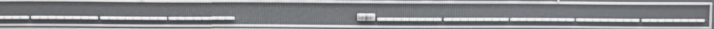
| A编号 / AA对象 | POLY来源编号 | 观察/槽位 | 几何检查 |
|---|---|---|---|
| A01 / AA-F01649 | P001 (SG-U07-001), P002 (SG-U07-002), P003 (SG-U07-003), P004 (SG-U07-004), P005 (SG-U07-005), P006 (SG-U07-006), P007 (SG-U07-007), P008 (SG-U07-008) | 8/8；未观察槽位[] | SG-U07-001: PASS, SG-U07-002: PASS, SG-U07-003: PASS, SG-U07-004: PASS, SG-U07-005: PASS, SG-U07-006: PASS, SG-U07-007: PASS, SG-U07-008: PASS |
| A02 / AA-F01650 | P009 (SG-U07-009), P010 (SG-U07-010), P011 (SG-U07-011), P012 (SG-U07-012), P013 (SG-U07-013), P014 (SG-U07-014), P015 (SG-U07-015), P016 (SG-U07-016) | 8/8；未观察槽位[] | SG-U07-009: PASS, SG-U07-010: PASS, SG-U07-011: PASS, SG-U07-012: PASS, SG-U07-013: PASS, SG-U07-014: PASS, SG-U07-015: PASS, SG-U07-016: PASS |
| A03 / AA-F01651 | P017 (SG-U07-017), P018 (SG-U07-018), P019 (SG-U07-019), P020 (SG-U07-020), P021 (SG-U07-021), P022 (SG-U07-022), P023 (SG-U07-023), P024 (SG-U07-024) | 8/8；未观察槽位[] | SG-U07-017: PASS, SG-U07-018: PASS, SG-U07-019: PASS, SG-U07-020: PASS, SG-U07-021: PASS, SG-U07-022: PASS, SG-U07-023: PASS, SG-U07-024: PASS |
| A04 / AA-F01657 | P025 (SG-U07-025), P026 (SG-U07-026) | 2/2；未观察槽位[] | SG-U07-025: PASS, SG-U07-026: PASS |
| A05 / AA-F01652 | P027 (SG-U07-027), P028 (SG-U07-028), P029 (SG-U07-029), P030 (SG-U07-030), P031 (SG-U07-031), P032 (SG-U07-032), P033 (SG-U07-033), P034 (SG-U07-034) | 8/8；未观察槽位[] | SG-U07-027: PASS, SG-U07-028: PASS, SG-U07-029: PASS, SG-U07-030: PASS, SG-U07-031: PASS, SG-U07-032: PASS, SG-U07-033: PASS, SG-U07-034: PASS |
| A06 / AA-F01653 | P035 (SG-U07-035), P036 (SG-U07-036), P037 (SG-U07-037), P038 (SG-U07-038), P039 (SG-U07-039), P040 (SG-U07-040), P041 (SG-U07-041), P042 (SG-U07-042) | 8/8；未观察槽位[] | SG-U07-035: PASS, SG-U07-036: PASS, SG-U07-037: PASS, SG-U07-038: PASS, SG-U07-039: PASS, SG-U07-040: PASS, SG-U07-041: PASS, SG-U07-042: PASS |
| A07 / AA-F01655 | P043 (SG-U07-043), P044 (SG-U07-044), P045 (SG-U07-045), P046 (SG-U07-046), P047 (SG-U07-047), P048 (SG-U07-048), P049 (SG-U07-049), P050 (SG-U07-050) | 8/8；未观察槽位[] | SG-U07-043: PASS, SG-U07-044: PASS, SG-U07-045: PASS, SG-U07-046: PASS, SG-U07-047: PASS, SG-U07-048: PASS, SG-U07-049: PASS, SG-U07-050: PASS |
| A08 / AA-F01654 | P051 (SG-U07-051), P052 (SG-U07-052), P053 (SG-U07-053), P054 (SG-U07-054), P055 (SG-U07-055), P056 (SG-U07-056), P057 (SG-U07-057), P058 (SG-U07-058) | 8/8；未观察槽位[] | SG-U07-051: PASS, SG-U07-052: PASS, SG-U07-053: PASS, SG-U07-054: PASS, SG-U07-055: PASS, SG-U07-056: PASS, SG-U07-057: PASS, SG-U07-058: PASS |
| A09 / AA-F01656 | P059 (SG-U07-059), P060 (SG-U07-060), P061 (SG-U07-061), P062 (SG-U07-062), P063 (SG-U07-063), P064 (SG-U07-064), P065 (SG-U07-065), P066 (SG-U07-066) | 8/8；未观察槽位[] | SG-U07-059: PASS, SG-U07-060: PASS, SG-U07-061: PASS, SG-U07-062: PASS, SG-U07-063: PASS, SG-U07-064: PASS, SG-U07-065: PASS, SG-U07-066: PASS |
照片各保留原始坐标；两图标签表示结构关联，不表示已像素配准。联合图另用AA设计坐标。蓝色=结构检查通过的候选，红色=约束冲突；结构PASS不等于人工确认或真实工艺DRC。
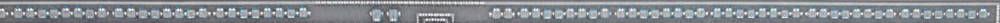
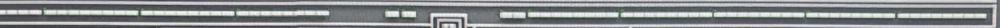
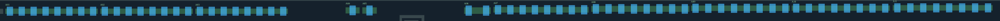

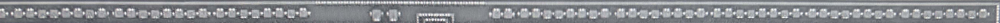
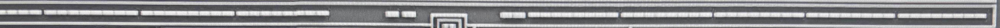
| A编号 / AA对象 | POLY来源编号 | 观察/槽位 | 几何检查 |
|---|---|---|---|
| A01 / AA-F01623 | P001 (SG-U08-001), P002 (SG-U08-002), P003 (SG-U08-003), P004 (SG-U08-004), P005 (SG-U08-005), P006 (SG-U08-006), P007 (SG-U08-007), P008 (SG-U08-008) | 8/8；未观察槽位[] | SG-U08-001: PASS, SG-U08-002: PASS, SG-U08-003: PASS, SG-U08-004: PASS, SG-U08-005: PASS, SG-U08-006: PASS, SG-U08-007: PASS, SG-U08-008: PASS |
| A02 / AA-F01625 | P009 (SG-U08-009), P010 (SG-U08-010), P011 (SG-U08-011), P012 (SG-U08-012), P013 (SG-U08-013), P014 (SG-U08-014), P015 (SG-U08-015), P016 (SG-U08-016) | 8/8；未观察槽位[] | SG-U08-009: PASS, SG-U08-010: PASS, SG-U08-011: PASS, SG-U08-012: PASS, SG-U08-013: PASS, SG-U08-014: PASS, SG-U08-015: PASS, SG-U08-016: PASS |
| A03 / AA-F01629 | P017 (SG-U08-017), P018 (SG-U08-018), P019 (SG-U08-019), P020 (SG-U08-020), P021 (SG-U08-021), P022 (SG-U08-022), P023 (SG-U08-023), P024 (SG-U08-024) | 8/8；未观察槽位[] | SG-U08-017: PASS, SG-U08-018: PASS, SG-U08-019: PASS, SG-U08-020: PASS, SG-U08-021: PASS, SG-U08-022: PASS, SG-U08-023: PASS, SG-U08-024: PASS |
| A04 / AA-F01628 | P025 (SG-U08-025) | 1/1；未观察槽位[] | SG-U08-025: PASS |
| A05 / AA-F01627 | P026 (SG-U08-026) | 1/1；未观察槽位[] | SG-U08-026: PASS |
| A06 / AA-F01626 | P027 (SG-U08-027), P028 (SG-U08-028) | 2/2；未观察槽位[] | SG-U08-027: PASS, SG-U08-028: PASS |
| A07 / AA-F01630 | P029 (SG-U08-029), P030 (SG-U08-030), P031 (SG-U08-031), P032 (SG-U08-032), P033 (SG-U08-033), P034 (SG-U08-034), P035 (SG-U08-035), P036 (SG-U08-036) | 8/8；未观察槽位[] | SG-U08-029: PASS, SG-U08-030: PASS, SG-U08-031: PASS, SG-U08-032: PASS, SG-U08-033: PASS, SG-U08-034: PASS, SG-U08-035: PASS, SG-U08-036: PASS |
| A08 / AA-F01631 | P037 (SG-U08-037), P038 (SG-U08-038), P039 (SG-U08-039), P040 (SG-U08-040), P041 (SG-U08-041), P042 (SG-U08-042), P043 (SG-U08-043), P044 (SG-U08-044) | 8/8；未观察槽位[] | SG-U08-037: PASS, SG-U08-038: PASS, SG-U08-039: PASS, SG-U08-040: PASS, SG-U08-041: PASS, SG-U08-042: PASS, SG-U08-043: PASS, SG-U08-044: PASS |
| A09 / AA-F01633 | P045 (SG-U08-045), P046 (SG-U08-046), P047 (SG-U08-047), P048 (SG-U08-048), P049 (SG-U08-049), P050 (SG-U08-050), P051 (SG-U08-051), P052 (SG-U08-052) | 8/8；未观察槽位[] | SG-U08-045: PASS, SG-U08-046: PASS, SG-U08-047: PASS, SG-U08-048: PASS, SG-U08-049: PASS, SG-U08-050: PASS, SG-U08-051: PASS, SG-U08-052: PASS |
| A10 / AA-F01632 | P053 (SG-U08-053), P054 (SG-U08-054), P055 (SG-U08-055), P056 (SG-U08-056), P057 (SG-U08-057), P058 (SG-U08-058), P059 (SG-U08-059), P060 (SG-U08-060) | 8/8；未观察槽位[] | SG-U08-053: PASS, SG-U08-054: PASS, SG-U08-055: PASS, SG-U08-056: PASS, SG-U08-057: PASS, SG-U08-058: PASS, SG-U08-059: PASS, SG-U08-060: PASS |
| A11 / AA-F01634 | P061 (SG-U08-061), P062 (SG-U08-062), P063 (SG-U08-063), P064 (SG-U08-064), P065 (SG-U08-065), P066 (SG-U08-066), P067 (SG-U08-067), P068 (SG-U08-068) | 8/8；未观察槽位[] | SG-U08-061: PASS, SG-U08-062: PASS, SG-U08-063: PASS, SG-U08-064: PASS, SG-U08-065: PASS, SG-U08-066: PASS, SG-U08-067: PASS, SG-U08-068: PASS |
照片各保留原始坐标；两图标签表示结构关联，不表示已像素配准。联合图另用AA设计坐标。蓝色=结构检查通过的候选，红色=约束冲突；结构PASS不等于人工确认或真实工艺DRC。
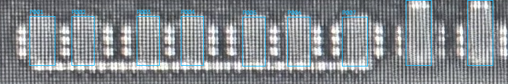
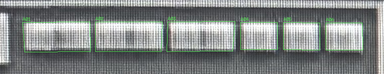

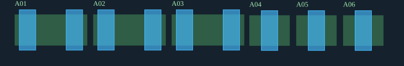
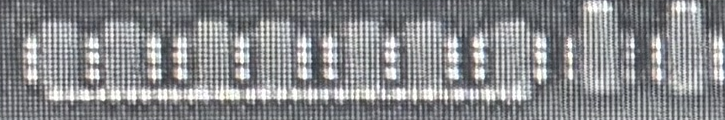
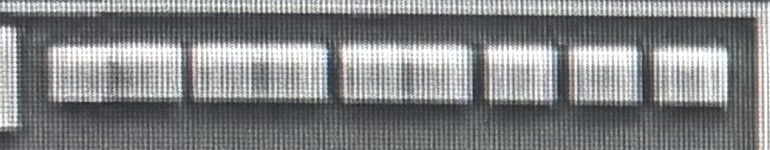
| A编号 / AA对象 | POLY来源编号 | 观察/槽位 | 几何检查 |
|---|---|---|---|
| A01 / T02-AA-0 | P001 (SG-U09-001), P002 (SG-U09-002) | 2/2；未观察槽位[] | SG-U09-001: PASS, SG-U09-002: PASS |
| A02 / T02-AA-1 | P003 (SG-U09-003), P004 (SG-U09-004) | 2/2；未观察槽位[] | SG-U09-003: PASS, SG-U09-004: PASS |
| A03 / T02-AA-2 | P005 (SG-U09-005), P006 (SG-U09-006) | 2/2；未观察槽位[] | SG-U09-005: PASS, SG-U09-006: PASS |
| A04 / AA-F01617 | P007 (SG-U09-007) | 1/1；未观察槽位[] | SG-U09-007: PASS |
| A05 / AA-F01615 | P008 (SG-U09-008) | 1/1；未观察槽位[] | SG-U09-008: PASS |
| A06 / AA-F01616 | P009 (SG-U09-009) | 1/1；未观察槽位[] | SG-U09-009: PASS |